④ To Jupiter by using Earth twice
Jupiter is far. Try to go straight there and, on any rocket, the spacecraft comes out far too light. NASA's Juno answered by heading outward, coming back to Earth two years later, and borrowing its gravity. The trick is called ΔVEGA (Delta-V Earth Gravity Assist).
What you will learn here
- How many kilograms you can carry going straight to Jupiter
- Why a leg from Earth back to Earth cannot be solved automatically
- Manual mode, and the burn sequence that comes with it
- What happens when you burn at aphelion
- Where auto-tune earns its keep
First, go straight to Jupiter
Why take such a detour? Let us first see what happens if you go straight. Make Jupiter a pass (a swingby at Jupiter for the second sequence) and hunt for the cheapest dates. The bottom is around leaving on 16 July 2011 and arriving 920 days (two and a half years) later.
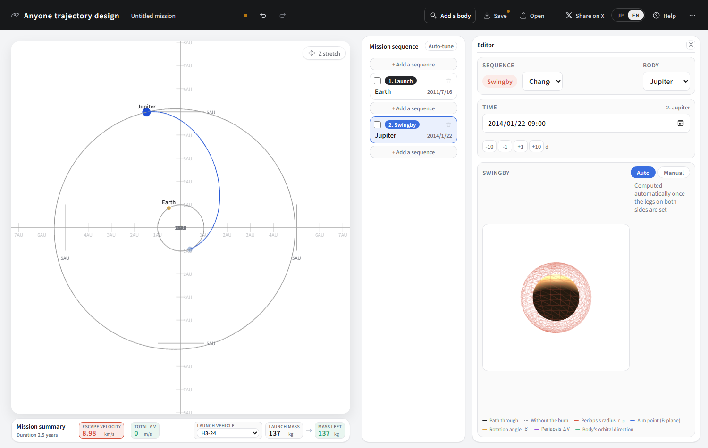
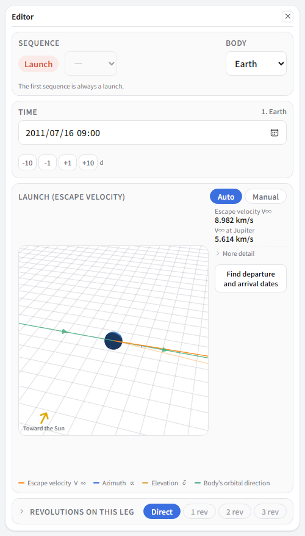
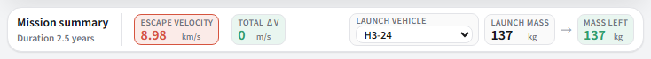
It is not that you cannot get there. It is that you get there with 137 kg. Juno's spacecraft weighs 3625 kg, so this is nowhere near enough.
A C3 of 80.69 is nearly nine times the trip to Mars (9.30). The further you go, the more energy you must be given at departure, and the less mass the rocket can lift for it.
That 80.69 nearly matches the C3 of a Hohmann transfer to Jupiter — the cheapest route in principle — at 77.3. In other words, even the cheapest direct trajectory costs this. The details are in Hohmann transfers and the third dimension.
Going back to meet Earth again
-
Start again with three sequences. All of these are Juno's real dates.
No. Type Body Date 1 Launch Earth 2011/08/05 2 Swingby Earth 2013/10/09 3 Orbit insertion Jupiter 2016/07/05 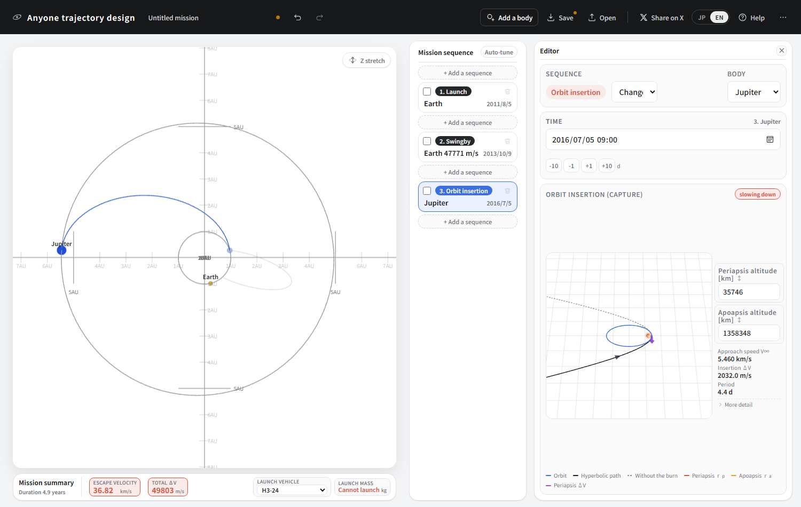
No trajectory is drawn. There should be nothing resembling a line in the solar-system view.
It does not work. Select the launch sequence and the escape velocity is an outrageous number.
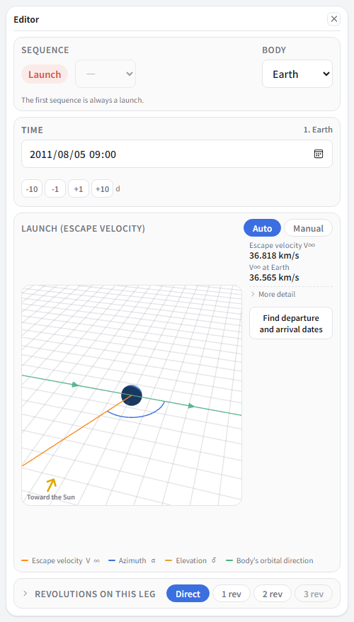
The reason is plain. This leg goes from Earth to Earth, and two years apart at that. In two years Earth goes round almost exactly twice and comes back to where it started, so the problem becomes “departure and arrival at nearly the same place”. The only trajectories that fit are absurd ones that shoot straight out and come straight back.
Switching to manual mode
-
Select the launch sequence and press Manual.
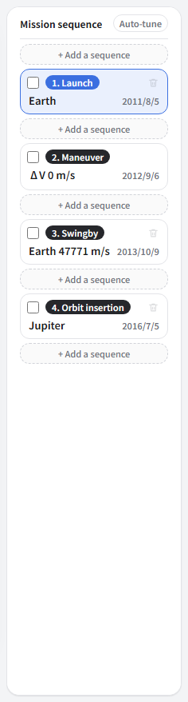
A “Maneuver” sequence appears on its own. That is the deep-space burn. In manual mode you decide the direction and speed of departure. In exchange, there is no longer any guarantee of reaching the next destination, so the burn sequence behind it takes on the job of getting you there.
-
Set the burn sequence's date to around 2012/08/31 — about a year after launch.
-
Go back to the launch sequence and enter escape velocity 5.6 km/s, azimuth α = 0, elevation δ = 0.
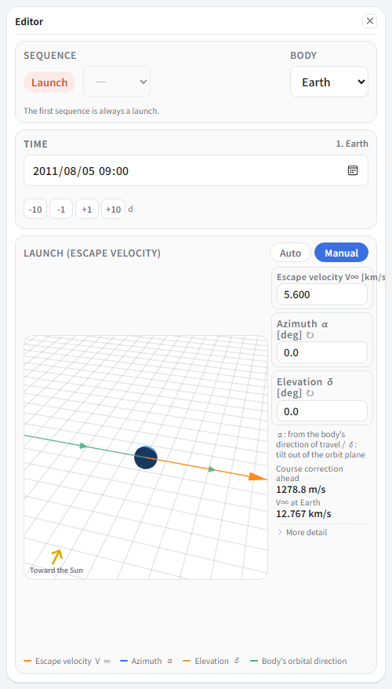
α = 0 means “straight along Earth's direction of travel”.
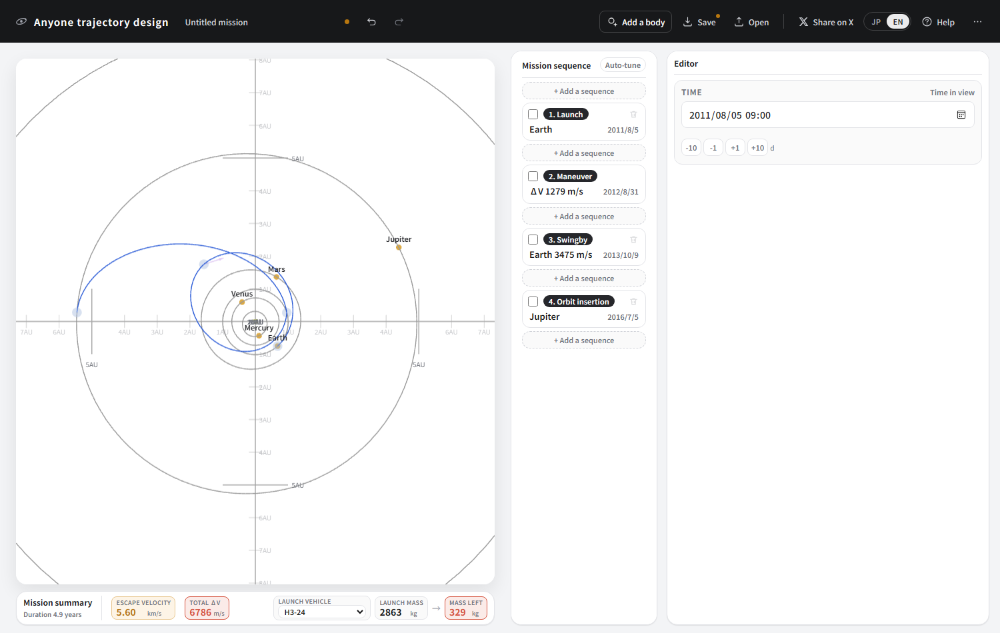
Tightening it with auto-tune
You could go on tightening by hand, but there are too many knobs (escape velocity, two angles, four dates). Press Auto-tune in the mission-sequence heading.
It starts from the current design and searches only nearby. It will not fetch some different trajectory, so the skeleton you decided (back to Earth, then Jupiter) stays put. It takes a few seconds.
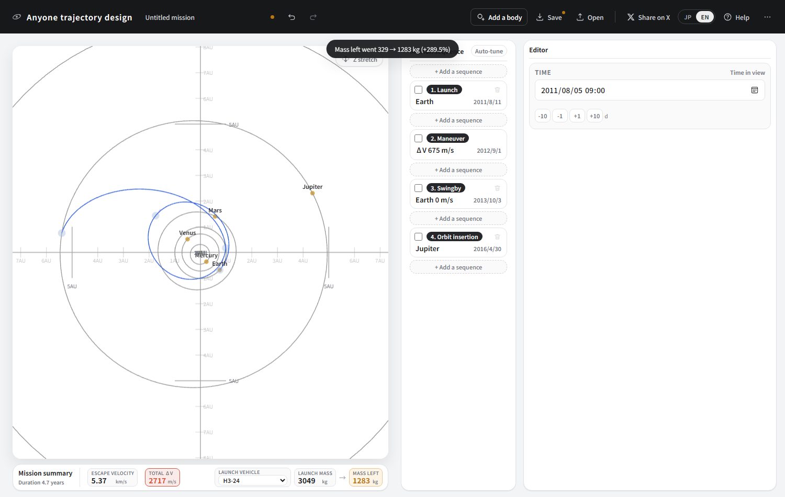
Reading what happened
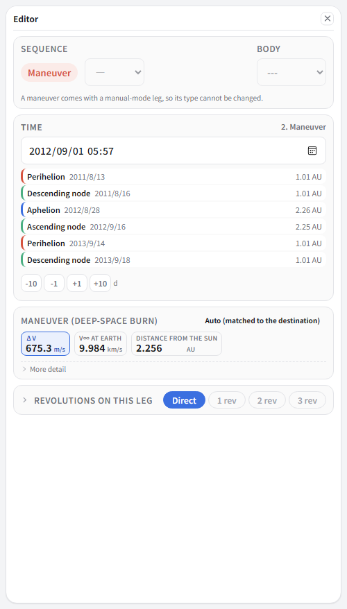
Notice the list of perihelion, aphelion and nodes in the time box. It shows aphelion 2.25 AU on 2012/8/27, and the burn's date (2012/9/4) is just after it. So this burn is made at the furthest point from the Sun.
That is the essence of ΔVEGA. Aphelion is where the spacecraft moves slowest, and slowing down a little there opens up the angle against Earth's orbit, which raises the relative speed a great deal. The launch V∞ was 5.3 km/s; a small burn of about 670 m/s brings the V∞ on return to Earth up to 9.9 km/s. To produce that speed at launch instead, heading straight for Jupiter, would take a C3 of around 98 km²/s² — on an ordinary rocket, almost no spacecraft at all.
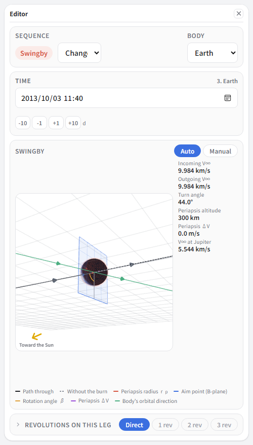
Then, passing close to Earth, the velocity as seen from the Sun leaps. The periapsis ΔV is 0 — gravity alone was enough, so there is no burn. From here you reach Jupiter.
What Earth bought us
| Straight to Jupiter | Using Earth again | |
|---|---|---|
| Launch energy C3 | 80.69 km²/s² | 28.8 km²/s² |
| Mass an H3 can launch | 137 kg | 3052 kg |
| Speed arriving at Jupiter | 5.61 km/s | 5.59 km/s |
| Time taken | 2.5 years | 4.6 years |
The arrival speed is all but identical, yet the launchable mass is 22 times larger. The price is a burn of about 670 m/s and roughly two extra years. Juno's 3625 kg spacecraft only exists because of that detour.
The finished article
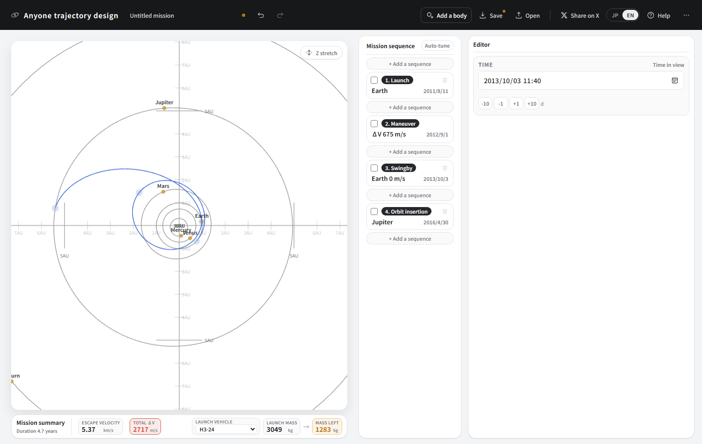
| Item | This design | The real Juno |
|---|---|---|
| Launch | 2011/08/10 | 2011/08/05 |
| Launch energy C3 | 28.8 km²/s² | 31.1 km²/s² |
| Deep-space burn | 669 m/s (September 2012) | about 730 m/s (Aug–Sep 2012, in two parts) |
| Earth swingby | 2013/10/02 | 2013/10/09 |
| V∞ at the swingby | 9.9 km/s | about 9.3 km/s |
| Arrival at Jupiter | 2016/04 | 2016/07/05 |
| Launch mass (H3-24) | 3052 kg | 3625 kg (Atlas V) |
Place it roughly by hand, let auto-tune tighten it, and you land this close to the real design. The dates differ by a few days because auto-tune is looking for “the design with the largest mass left”. It knows nothing of the other things the real mission carried: constraints on the launch date, communications, operating the instruments.